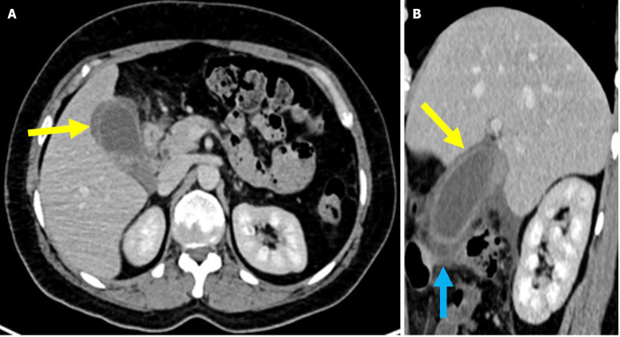
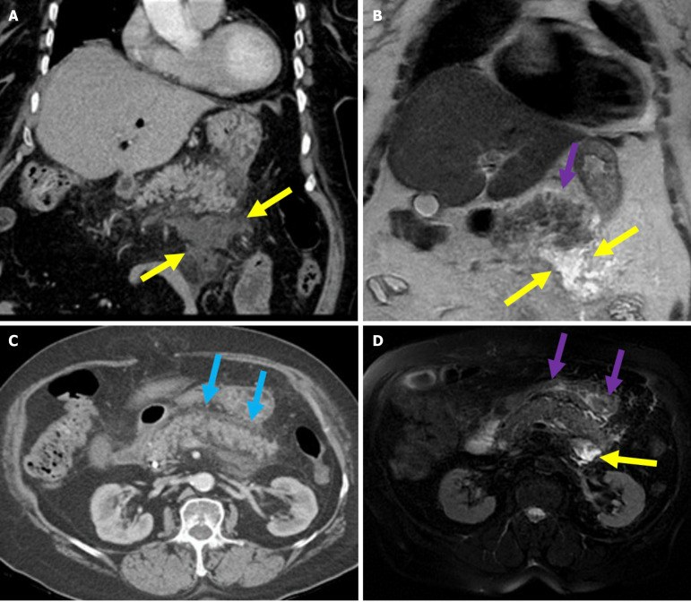
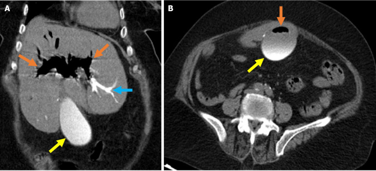

102 — Viêm túi mật cấp & viêm tụy cấp sau đặt stent mật/ERCP / Post-ERCP cholecystitis & pancreatitis
Tags: pattern:viem-tui-mat pattern:viem-tuy vung:tui-mat vung:tuy protocol:CT-bung-da-thi protocol:ERCP score:Atlanta score:TG18
Mức chắc chắn (certainty): tổng hợp y văn (literature synthesis) — nhóm tự biên từ y văn mở (CC BY, CC BY-NC), có 3 ca nguyên văn (verbatim case) của bài gốc, giữ đúng tuổi/thời điểm trong chú thích.
Câu chốt: sau ERCP, đau bụng + sốt + vàng da có 3 ổ phải nghĩ cùng lúc: tụy (PEP), túi mật (cholecystitis), đường mật (cholangitis) — cộng thêm thủng tá tràng/ống mật. Đừng gọi tất cả là "viêm tụy": cholecystitis sau ERCP hay bị bỏ sót vì đau được quy cho thủ thuật, và khí trong đường mật sau ERCP là bình thường, không phải thủng.
1. Tổng quan bệnh học – cơ chế hình ảnh
1.1 Dịch tễ và ngưỡng định lượng
- Tần suất biến chứng ERCP (gộp 2025, theo tổng quan hình ảnh 2025 — PMC12476729): viêm tụy (PEP) 4,6%; viêm đường mật 2,5%; chảy máu 1,5%; viêm túi mật 0,8%; thủng 0,5%; tử vong liên quan ERCP 0,2%.
- PEP: trung bình 3–10%; trong các thử nghiệm ngẫu nhiên có nhóm chứng, 10–13%; nhóm nguy cơ cao (rối loạn cơ vòng Oddi, can thiệp tụy, đặt stent phủ) có thể 10–22% (PMC13669755; PMC13355881).
- Cholecystitis sau ERCP hiếm hơn (~0,8% chung), nhưng tăng rõ khi stent kim loại phủ toàn bộ (FCSEMS) che ống túi mật; bài 137 ghi nhận ~5% ở nhóm stent có thiết kế liên quan.
- Tiêu chuẩn Cotton cho PEP: đau bụng kiểu tụy + amylase ≥ 3 lần giới hạn trên + kéo dài/nhập viện ≥ 2 đêm. Nếu chỉ dùng Cotton mà không có lipase và hình ảnh, có thể bỏ sót tới 41,9% ca PEP (PMC12476729).
- Phân độ nặng: dùng Atlanta sửa đổi 2012 (xem bài 135): thể phù nề kẽ (interstitial edematous) vs hoại tử (necrotizing); biến chứng tại chỗ APFC, pseudocyst, ANC, WON; suy cơ quan > 48 giờ = nặng.
1.2 TẠI SAO PEP xảy ra (cơ chế → hình ảnh)
- Cơ chế: đặt catheter/tiêm thuốc cản quang vào ống tụy → tăng áp lực ống tụy + tổn thương hóa học/nhiệt + phù nhú → tắc dòng chảy ra → hoạt hóa enzyme tiêu hóa tại chỗ → viêm tụy tự tiêu.
- Hình ảnh: tụy to, phù, tăng tín hiệu T2, mờ các dải mỡ quanh tụy (peripancreatic fat stranding), dịch quanh tụy; thể hoại tử: vùng không ngấm thuốc (thiếu máu) + khí (nhiễm trùng) muộn.
- Vì sao CT sớm có thể bình thường: phù nề và hoại tử cần 24–72 giờ mới rõ; CT ngay sau ERCP không loại trừ PEP — chẩn đoán dựa lâm sàng + lipase/amylase, CT để tìm biến chứng/tìm nguyên nhân khác.
1.3 TẠI SAO viêm túi mật sau ERCP/stent
- Cơ chế chính: stent phủ (FCSEMS) bít ống túi mật (cystic duct) → ứ mật + nhiễm khuẩn → viêm túi mật cấp; hoặc sỏi/bùn di chuyển trong lúc thủ thuật; hoặc tắc ống túi mật do phù nề/khí/nhiễm trùng.
- Hình ảnh (giống viêm túi mật thông thường): túi mật căng, thành dày ≥ 3 mm, ngấm thuốc niêm mạc, dịch quanh túi mật, mờ mỡ quanh túi mật, dấu Murphy trên siêu âm; có thể khí trong thành/lòng túi mật (viêm túi mật khí thũng — thể nặng).
- Vì sao dễ bỏ sót: đau sau ERCP được quy cho viêm tụy/đau thủ thuật; men gan tăng nhẹ; không có sỏi trên siêu âm → tưởng "không phải túi mật". Stent phủ nằm ngay ống túi mật là manh mối.
1.4 TẠI SAO viêm đường mật và thủng
- Cholangitis: tắc dòng mật (sỏi, u, stent hỏng) + vi khuẩn từ tá tràng → sốt, vàng da, đau, có thể sốc. Hình ảnh: giãn đường mật, thành ống dày ngấm thuốc, có thể khí trong đường mật, áp-xe gan.
- Thủng (Stapfer): I thành tá tràng bên (khí sau phúc mạc nhiều); II quanh nhú (khí/dịch sau phúc mạc); III ống mật (thoát thuốc cản quang); IV vi thủng (chỉ khí sau phúc mạc ít, thường bảo tồn). Khí sau phúc mạc + dịch là chốt; khí trong lòng đường mật đơn thuần thì không.
2. Mẫu hình + chẩn đoán phân biệt theo thời gian (gamut)
Mẫu hình: bệnh nhân đau bụng sau ERCP; thời điểm xuất hiện thu hẹp gamut:
- Trong/ngay sau thủ thuật (0–6 giờ): thủng tá tràng/ống mật (Stapfer I–IV) — đau dữ dội, tràn khí/dịch; viêm tá tràng cấp (duodenitis) — đau nhiều nhưng CT chỉ dày niêm mạc tá tràng, tự hồi phục; chảy máu (sau cắt cơ vòng) — máu trong tá tràng, hemobilia.
- 24–72 giờ: PEP (phù nề/hoại tử), cholangitis (sốt, vàng da), viêm túi mật sớm.
- 3–30 ngày: viêm túi mật do stent, áp-xe gan, pseudocyst/APFC, hẹp ống mật sau cắt cơ vòng, di trú stent.
- > 30 ngày: hẹp lành tính, sỏi tái phát, u tiến triển, di trú stent muộn.
Gamut theo cơ quan (khi CT có bất thường):
- Tụy: PEP thể phù nề, thể hoại tử, APFC/pseudocyst/WON.
- Túi mật: viêm túi mật cấp (do stent/sỏi), viêm túi mật khí thũng, hoại tử túi mật.
- Đường mật: cholangitis, áp-xe gan, hẹp sau thủ thuật, rò mật.
- Tá tràng/phúc mạc: duodenitis, thủng sau phúc mạc, khí phúc mạc.
- Mạch máu: giả phình động mạch gan (hemobilia), máu tụ sau phúc mạc.
Mnemonic "PAIN after ERCP": Pancreatitis, Abscess/cholangitis, Iatrogenic perforation, Neoplasia/u tắc mật (không phải biến chứng nhưng là nguyên nhân nền), after ERCP = luôn hỏi thời điểm, loại stent, kỹ thuật cắt cơ vòng.
3. Bảng so sánh phân biệt (ma trận đối chiếu)
| Thực thể (entity) | Hình ảnh điển hình (CT/MRI) | Chốt vào (rule-in) | Chốt loại (rule-out) | Gợi ý xác nhận |
|---|---|---|---|---|
| PEP thể phù nề | Tụy to, phù, tăng T2, mờ mỡ quanh tụy, dịch quanh tụy, còn ngấm thuốc đều | Đau kiểu tụy + amylase/lipase ≥ 3× ULN + mờ mỡ quanh tụy | Có vùng không ngấm thuốc/khí → thể hoại tử, không chỉ phù nề | Lipase, CT sau 48–72 giờ; Atlanta 2012 |
| PEP thể hoại tử | Vùng tụy không ngấm thuốc, mờ mỡ lan rộng, ANC/WON; khí = nhiễm trùng | Không ngấm thuốc + dịch quanh tụy > 4 tuần (WON) | Chỉ phù nề, ngấm thuốc đều → thể nhẹ | CT đa thì; MRI; theo dõi 48–72 giờ |
| Viêm túi mật sau ERCP/stent | Túi mật căng, thành dày ≥ 3 mm, ngấm thuốc niêm mạc, dịch/mờ mỡ quanh túi mật | Murphy + sốt + thành dày + dịch quanh túi mật + stent phủ gần ống túi mật | Không dày thành, không dịch quanh túi mật → nghĩ nguyên nhân khác | US là đầu tay; CT xác nhận biến chứng; TG18 |
| Viêm đường mật (cholangitis) | Giãn đường mật, thành ống dày ngấm thuốc, khí trong đường mật, áp-xe gan | Sốt + vàng da + đau + giãn đường mật (Charcot/Reynolds) | Không giãn, không dày thành ống → ít nghĩ cholangitis | CT/MRCP; cấy máu; TG18 |
| Thủng Stapfer I–IV | Khí sau phúc mạc, dịch sau phúc mạc, thoát thuốc cản quang (III), khí phúc mạc (I) | Khí/dịch sau phúc mạc mới + đau dữ dội sau thủ thuật | Khí chỉ trong lòng đường mật, không có dịch/khí ngoài ống → bình thường sau ERCP | CT không cản quang + cản quang; nội soi; phân loại Stapfer |
| Viêm tá tràng cấp (duodenitis) | Dày niêm mạc tá tràng, phù nề, tăng ngấm thuốc; không có khí/dịch ngoài lòng | Đau 24 giờ sau ERCP + dày niêm mạc tá tràng + tự giảm | Có mờ mỡ quanh tụy/dịch quanh tụy → nghĩ PEP kèm | CT; theo dõi lâm sàng 24–48 giờ |
| Hemobilia/giả phình mạch gan | Máu tụ trong đường mật, giả phình ngấm thuốc thì động mạch, máu trong túi mật/tá tràng | Đau + vàng da + chảy máu tiêu hóa sau ERCP | Không có khối ngấm thuốc, không máu trong đường mật → loại | CTA; DSA + nút mạch |
Đọc ma trận theo 3 câu hỏi: (1) thời điểm sau ERCP? (2) khí/dịch ở đâu (trong lòng ống ≠ ngoài ống)? (3) tụy còn ngấm thuốc đều không? Trả lời 3 câu này phân được 80% ca.
4. Protocol chụp + hệ phân độ/điểm chuẩn hóa
4.1 Protocol
- Siêu âm bụng: đầu tay khi đau hạ sườn phải/sốt; đánh giá túi mật (thành, sỏi, dịch quanh), đường mật, tụy (thường bị che khí).
- CT bụng: không cản quang ngay khi nghi thủng/chảy máu; CT có cản quang đa thì sau 48–72 giờ để đánh giá hoại tử tụy và biến chứng. Lát 1–3 mm, cửa sổ mỡ.
- MRI/MRCP: khi nghi hẹp/rò đường mật, sỏi sót, hoặc bệnh nhân trẻ cần tránh xạ; T2 + DWI + MRCP; tụy T2 fat-sat đánh giá phù/hoại tử.
- CTA/DSA: khi có máu trong đường mật/tá tràng hoặc giả phình — không chờ.
- Xét nghiệm: lipase/amylase (lipase nhạy hơn, không cần lặp nhiều), CRP, WBC, bilirubin/ALP/GGT, cấy máu khi sốt; nhóm máu nếu chảy máu.
4.2 Phân độ và ngưỡng xử trí
- PEP — Atlanta sửa đổi 2012: nhẹ (không suy cơ quan, không biến chứng tại chỗ) / trung bình (suy cơ quan thoáng qua < 48 giờ** hoặc biến chứng tại chỗ) / nặng (suy cơ quan **> 48 giờ). CT sớm không cần ở thể nhẹ; CT/MRI sau 48–72 giờ nếu không cải thiện sau 48–72 giờ hoặc sốt.
- Viêm túi mật — Tokyo Guidelines 2018 (TG18): chẩn đoán = 1 dấu hiệu tại chỗ (Murphy, đau/khối hạ sườn phải) + 1 dấu hiệu toàn thân (sốt, CRP/WBC tăng) + hình ảnh; phân độ I (nhẹ), II (WBC > 18.000/mm³, khối sờ thấy, triệu chứng > 72 giờ, viêm tại chỗ rõ), III (rối loạn chức năng cơ quan). Độ III/không mổ được → dẫn lưu túi mật (PTGBD/endoscopic) + kháng sinh; độ I–II mổ nội soi sớm trong 72 giờ.
- Cholangitis — TG18: kháng sinh + dẫn lưu đường mật (ERCP/PTBD) trong 24 giờ nếu độ III, 24–48 giờ nếu không đáp ứng.
- Kháng sinh: cephalosporin phổ rộng ± metronidazol (hoặc piperacillin–tazobactam) theo mức độ; cấy máu/mật trước khi dùng nếu có thể.
4.3 Dự phòng PEP (ngưỡng từ nguồn)
- NSAID đặt trực tràng: indomethacin hoặc diclofenac 100 mg ngay trước/sau thủ thuật — giảm PEP, đặc biệt nhóm nguy cơ trung bình–cao (khuyến cáo ASGE 2023).
- Bù dịch tích cực bằng lactated Ringer's: 3 mL/kg/giờ trong thủ thuật + 20 mL/kg bolus ngay sau + 3 mL/kg/giờ × 8 giờ (giảm còn 1,5 mL/kg/giờ nếu không đau). Thử nghiệm 126 bệnh nhân: PEP 6,3% vs 22,2% (RR 0,29; KTC 95%: 0,10–0,82), thời gian nằm viện 1,8 vs 3,0 ngày (PMC13355881).
- Stent tụy dự phòng (PPS): đặt ở nhóm nguy cơ cao (tiêm tụy nhiều lần, cắt cơ vòng qua tụy, khó đặt ống); giảm PEP còn 5–7%; PPS + NSAID tốt hơn NSAID đơn thuần (11% vs 15%) (PMC13669755). Stent 5 Fr, dài 3–5 cm, lưu 3–5 ngày (thực hành chuẩn; theo dõi di trú).
- Giảm nguy cơ do thủ thuật: hạn chế tiêm cản quang vào ống tụy, dùng hướng dẫn dây dẫn (guidewire-assisted cannulation), tránh cắt cơ vòng không cần thiết; rối loạn cơ vòng Oddi làm tăng nguy cơ ~10 lần sau đo áp lực (PMC13669755).
- Stent phủ (FCSEMS): làm tăng PEP (7,8% vs 3,4% với stent nhựa; 2,4% không stent; OR 5,49) (PMC12968636) → cân nhắc khi chỉ định.
flowchart TD
A["Đau bụng sau ERCP"] --> B{"Thời điểm?"}
B -->|"0-6 giờ, đau dữ dội"| C["Nghi thủng: CT không cản quang"]
C --> D{"Khí/dịch sau phúc mạc?"}
D -->|"Có"| E["Stapfer I-IV: hội chẩn ngoại, dẫn lưu"]
D -->|"Không"| F["Theo dõi, loại trừ viêm tá tràng"]
B -->|"24-72 giờ"| G["Lipase, CRP, WBC, siêu âm"]
G --> H{"Lipase ≥ 3 lần ULN?"}
H -->|"Có"| I["PEP: Atlanta, CT sau 48-72 giờ nếu nặng"]
H -->|"Không"| J{"Sốt + vàng da + giãn đường mật?"}
J -->|"Có"| K["Cholangitis: kháng sinh + dẫn lưu trong 24 giờ"]
J -->|"Không"| L{"Túi mật căng, thành dày?"}
L -->|"Có"| M["Viêm túi mật: TG18, kháng sinh, mổ/PTGBD"]
5. Biến thể bình thường và cạm bẫy
- Khí và thuốc cản quang trong đường mật sau ERCP là BÌNH THƯỜNG: khí nổi phía trước, thuốc cản quang lắng phía sau; gặp ở 70 tuổi sau lấy sỏi, xét nghiệm bình thường (PMC12476729, Fig 1). Chỉ gọi thủng khi có khí/dịch NGOÀI lòng ống (sau phúc mạc, quanh tá tràng).
- Viêm tá tràng cấp sau ERCP gây đau nhiều, có thể bắt chước PEP; CT chỉ dày niêm mạc tá tràng, không mờ mỡ quanh tụy → không tăng liều điều trị PEP.
- CT ngay sau ERCP có thể bình thường trong PEP — đừng loại trừ bằng CT sớm; chẩn đoán bằng lipase + lâm sàng, CT để tìm hoại tử/biến chứng.
- Amylase tăng đơn thuần không phải PEP: sau ERCP hyperamylasemia gặp ở 14–41% tùy nhóm (PMC13355881); PEP cần đau + amylase ≥ 3× ULN + ≥ 2 đêm.
- Viêm túi mật sau ERCP không cần có sỏi: stent phủ che ống túi mật là nguyên nhân đủ; đừng loại trừ vì siêu âm không thấy sỏi.
- Stent kim loại gây giả ảnh (beam-hardening) che mô xung quanh → đọc MRCP bổ sung khi nghi hẹp/u; đừng đo đường kính ống ngay sát stent.
- Cạm bẫy "một nguyên nhân": PEP + cholangitis + cholecystitis có thể cùng lúc; sau khi xử trí một ổ vẫn phải khám lại bụng và chụp lại nếu sốt kéo dài.
6. Tự lượng giá — Blind Quiz
Ca 1 — Nữ 33 tuổi, 10 ngày sau ERCP: đau bụng, buồn nôn, Murphy dương tính, AST/ALT và CRP tăng:

- Hỏi: dấu hiệu chính? Vì sao sau ERCP? Chẩn đoán phân biệt và xử trí?
Bấm để hiện đáp án (findings + chẩn đoán)
- Dấu hiệu: thành túi mật dày, niêm mạc tăng ngấm thuốc (mũi tên vàng), mờ mỡ quanh túi mật (mũi tên xanh); không thấy sỏi cản quang.
- Chẩn đoán: viêm túi mật cấp sau ERCP — cơ chế thường do phù nề/tắc ống túi mật, hoặc stent phủ che ống túi mật.
- Vì sao: viêm thành + mờ mỡ quanh túi mật = viêm cấp; không có sỏi không loại trừ.
- Xử trí: nhập viện, kháng sinh, mổ nội soi sớm trong 72 giờ nếu đủ điều kiện; nếu không mổ được → dẫn lưu túi mật qua da/nội soi (TG18).
- Nguồn ảnh: World Journal of Radiology 2025 (PMC12476729), Fig 7, CC BY-NC 4.0.
Ca 2 — Nữ 81 tuổi, đau thượng vị sau ERCP, amylase và CRP tăng:

- Hỏi: thể bệnh? Có hoại tử không? Khi nào chụp lại?
Bấm để hiện đáp án
- Dấu hiệu: tụy to, phù, mờ mỡ quanh tụy (mũi tên xanh), dịch quanh tụy (APFC); tụy vẫn ngấm thuốc đều → không hoại tử; MRI T2 cho thấy tăng tín hiệu phù nề (mũi tên tím).
- Chẩn đoán: PEP thể phù nề kẽ (interstitial edematous) kèm APFC — Atlanta 2012.
- Vì sao: còn ngấm thuốc đều = chưa hoại tử; dịch quanh tụy < 4 tuần = APFC (không phải pseudocyst).
- Theo dõi: CT/MRI lại sau 48–72 giờ nếu không cải thiện/sốt để tìm hoại tử/WON; điều trị hỗ trợ (dịch, giảm đau, ăn sớm khi dung nạp).
- Nguồn ảnh: World Journal of Radiology 2025 (PMC12476729), Fig 4, CC BY-NC 4.0.
Ca 3 — Nữ 70 tuổi, đau bụng và ấn đau nhẹ sau ERCP lấy sỏi; xét nghiệm bình thường. CT không cản quang:

- Hỏi: đây là bình thường hay thủng? Dấu hiệu nào phân biệt?
Bấm để hiện đáp án
- Dấu hiệu: khí trong đường mật trong gan và túi mật (mũi tên cam), thuốc cản quang lắng trong đường mật và túi mật (mũi tên xanh/vàng); không có khí/dịch sau phúc mạc, không mờ mỡ quanh tá tràng.
- Chẩn đoán: hình ảnh sau ERCP bình thường (khí + cản quang tồn dư) — không phải thủng, không phải sán.
- Vì sao: khí trong lòng ống và nổi phía trước; thủng cần khí/dịch ngoài lòng ống (sau phúc mạc) hoặc thoát thuốc.
- Xử trí: theo dõi lâm sàng; không kháng sinh chỉ vì có khí trong đường mật.
- Nguồn ảnh: World Journal of Radiology 2025 (PMC12476729), Fig 1, CC BY-NC 4.0.
Bài liên quan chéo
- 100 – Tổng quan hệ Bụng
- 130 – Túi mật: sỏi, viêm cấp/mạn, adenomyomatosis vs K
- 135 – Viêm tụy cấp Atlanta 2012 & Balthazar
- 131 – Tắc mật
- 137 – Theo dõi stent/dẫn lưu đường mật
- 910 – Dẫn lưu áp-xe & đường mật qua da
Ảnh
102_viem-tui-mat-sau-ercp_CT_WorldJRadiology2025-Fig7.jpg— CT có cản quang, ca 33 tuổi, CC BY-NC 4.0 (PMC12476729).102_viem-tuy-sau-ercp_CT_WorldJRadiology2025-Fig4.jpg— CT/MRI, ca 81 tuổi, CC BY-NC 4.0 (PMC12476729).102_khi-duong-mat-sau-ercp_CT_WorldJRadiology2025-Fig1.jpg— CT không cản quang, ca 70 tuổi, CC BY-NC 4.0 (PMC12476729).- Chi tiết giấy phép từng ảnh:
images/CREDITS.md.
Không dùng để chẩn đoán độc lập khi chưa có người hướng dẫn.